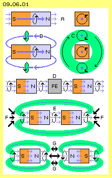
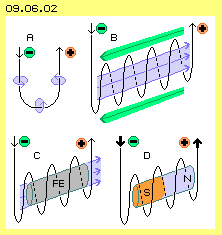
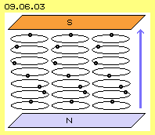
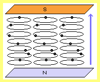
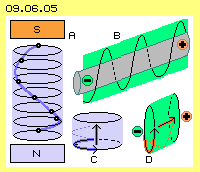

Geheimnis der Magnete
Für einen jungen Menschen ist die Welt voller Wunder. Die meisten erledigen sich im Lauf der Zeit, aber viele bleiben bis zum Lebensende unaufgelöst. Die Wissenschaften liefern Erklärungen, aber vielfach bleiben auch diese ´wundersam´. Die erste Erfahrung mit einer Kompass-Nadel stellen solch ein Wunder dar: warum zeigt sie immer nach Nord, wie von einer unsichtbaren Kraft gesteuert? Später erfährt man, dass der Kompass ein kleiner Stabmagnet ist und die Erde wie ein riesiger Stabmagnet von einem Magnetfeld umgeben ist und der geographische Nordpol ein magnetischer Südpol ist. Wundersamer Weise bleibt ungeklärt, wie sich das mit einem glühend heißen Erd-Kern vereinbaren lässt. Aber das ist hier nicht relevant bzw. dieser ´Reibungs-Magnetismus´ (in Analogie zu obiger ´Reibungs-Elektrizität´) ist in einem früheren Kapitel 08.17. ´Ätherwirbel der Erde´ dargestellt.
Die praktischen Erfahrungen mit Magneten haben leider die Theorie negativ beeinflusst, nicht nur die Elektro-Technik und Physik allgemein, sondern auch das generelle Denken-in-Gegensätzen. Magnete zeigen deutlich zwei Pole und dieser Dualismus wurde zu einem allgemein gültigen Prinzip erhoben. Es wird unterstellt, dass es Gleiches und Ungleiches gibt, Anziehung und Abstoßung, Plus und Minus, immer genauso und genauso-umgekehrt, eine perfekte Symmetrie, beispielsweise Teilchen und Anti-Teilchen, bis zur Super-Symmetrie hoch getrieben - um letztlich zu erkennen, dass gerade die ´System-Brüche´ bzw. Asymmetrien die interessanten Ereignisse liefern. Das gängige polarisierende Denken ist zu simpel, zu mechanistisch, zu mathematisch, als dass es der Wirklichkeit entsprechen könnte. Es gibt keine gegensätzliche Extreme, es gibt immer nur ein Mehr-oder-Weniger mit fließenden Übergängen.
Beispielsweise hatte ich - monatelang und vergeblich - nach dem Muster von Ätherbewegungen gesucht, das eine perfekte Kugelform ergibt (z.B. weil bekanntlich alle Atome kugelförmige Objekte sind). Erst als ich mir die geistige Freiheit nahm, auch Beulen und Dellen und pulsierendes Schwingen zu akzeptieren, ergaben sich Lösungen und vielfältige Bewegungsmuster. Hier nun aber geht es um die Art von Äther-Bewegungen, welche die Erscheinungen des Magnetismus ergeben.
Innerer Magnetfluss
In Bild 09.06.01 ist oben bei A ein Stabmagnet im Längsschnitt gezeichnet mit seinem Südpol (S, rot) und seinem Nordpol (N, blau). Bei Permanentmagneten sind die Atome gitterförmig angeordnet. Dadurch sind die Ätherbewegungen in der Aura der Atome und in den Räumen zwischen den Atomen ebenfalls geordnet. Diese Strukturen ergeben intern einen ´magnetischen Fluss´, der generell vom Südpol zum Nordpol gerichtet ist (angezeigt durch den dicken blauen Pfeil). Es gibt gute Gründe anzunehmen, dass die Bewegung wiederum der obigen Regel ´in-Fahrt-Richtung-links-drehend´ folgt (angezeigt durch den schwarzen Kreis-Pfeil). Die Bahn dieser Bewegung ist also vergleichbar zu einer links-drehenden Wendeltreppe. Oben rechts ist ein entsprechender Querschnitt skizziert mit Blick auf den Südpol.
Aller benachbarte Äther muss sich analog verhalten. Wenn im Material am Südpol diese linksdrehende Vorwärtsbewegung gegeben ist, wird darum auch der Freie Äther vor dem Südpol zu einem adäquaten Schwingen angeregt. Wie in einem Gas oder einer Flüssigkeit gibt es hier eine ´Sogwirkung´. Die Bewegungs-Struktur im ´Rohr´ breitet sich auch nach hinten (gegen die Fließrichtung) aus. Das ist hier angezeigt durch die drei blauen Pfeile links vom Südpol. Analog dazu endet das Bewegungsmuster nicht an der Oberfläche des Nordpols. Dort tritt die gleiche Bewegungsform aus, d.h. auch der dortige Freie Äther wird diese geordnete Struktur aufweisen.
Äußerer Magnet-Rückfluss

Ein Permanentmagnet ist durchaus vergleichbar mit einer Pumpe und einfachen Schaufeln, die in einem Wasserbecken linksdrehend läuft. Am Einlass (Südpol) wird Wasser angesaugt, wobei die Strömung schon außerhalb einen linksdrehenden ´Drall´ aufweist. Am Auslass (Nordpol) wird dieses Bewegungsmuster hinaus gedrückt. Das umgebende Wasser (bzw. der Freie Äther) stellt einen Widerstand gegen die geordnete Bewegung dar. Der ´Strahl´ wird zur Seite hin umgelenkt. Eine gleichartige Bewegung ist am Südpol vorhanden - und beide Strömungen zusammen ergeben einen perfekten Kreislauf.
Dieser externe Rückfluss ist in der zweiten Zeile dieses Bildes als dicker blauer Pfeil B angezeigt. In Richtung des Fließens (hier also vom Nord- zum Südpol) bleibt die Links-Drehung unverändert. Rechts im Querschnitt ist diese Drehung durch den Kreis-Pfeil bei C markiert. Bei diesem Blick auf den Südpol (also gegen die externe Fließ-Richtung) erscheint das Schwingen rechts-drehend.
In diesem Bild ist intern nur ein dicker blauer Pfeil eingezeichnet, stellvertretend für viele ´Magnetfeldlinien´ (die theoretisch in allen Zwischenräumen des materiellen Gitters existieren). Auch der externe Rückfluss ist hier nur mit zwei dicken blauen Pfeilen angezeigt. Real verlaufen viele sehr dünne Magnetfeldlinien durch den Äther vom Nordpol zurück zum Südpol. Rund um die Längsseite des Stabmagnetes gibt es also einen Bereich des Rückflusses. Rechts im Querschnitt ist dieser Bereich durch einen grünen Ring markiert. Alle dortigen Ätherpunkte schwingen parallel zueinander, alle in Fließrichtung linksdrehend. Dieses gemeinsame Schwingen ergibt insgesamt die Erscheinung einer generellen Drehbewegung um die Außenseiten des Stabmagneten. Der Drehsinn ist in Fluss-Richtung links-drehend. Aus entgegen gesetzter Richtung, hier mit Blick auf den Südpol, erscheint das als generelle Rechts-Drehung.
Durchgängiger Fluss
Im lückenlosen Äther bewirkt eine geordnete Bewegung automatisch einen Zwang auf benachbarte Ätherpunkte, sich adäquat zu bewegen. Die geordnete Bewegung breitet sich dorthin aus, wo der Äther diese Bewegungsstruktur annehmen kann. Bei vorigem Rückfluss war das der Weg vom Nordpol außen herum zurück zum Südpol. Einfacher ist der geradlinige Weg vom Nordpol zum Südpol eines zweiten Stabmagneten. Diese Anordnung ist in der dritten Zeile dieses Bildes bei D skizziert.
Der Magnetfluss aus dem linken Stabmagneten fließt unter Beibehaltung seiner Linksdrehung zum rechten Stabmagneten. Dazwischen ist hier ein Stück Eisen (FE, grau) eingezeichnet und der Magnetfluss geht auch geradewegs durch dieses Material hindurch. Die Struktur des Eisens kann sich dieser Bewegungs-Struktur anpassen, im Wechsel sogar in beiden Richtungen (wie später zu diskutieren ist).
Drücken anstatt Ziehen
In der nächsten Zeile E sind beide Stabmagnete dicht zusammen gerückt. Hellgrün markiert ist der Bereich des externen Rückflusses vom Nordpol rechts zum Südpol links. Mittig stehen sich ein Nordpol und ein Südpol gegenüber. Nach gängigem Verständnis wird nun eine Anziehungskraft wirksam zwischen diesen beiden ungleichnamigen Polen - ohne dass hierfür eine Erklärung vorliegt.
Wie mehrfach ausgeführt wurde, bewirkt der Freie Äther einen allgemeinen Druck auf alle großräumigen Bewegungen, also auch auf diesen geordneten Magnetfluss. Innerhalb der Stabmagnete und auch im vorigen Eisen ist das Bewegungsmuster geschützt. Auch im Spalt E kann der Freie Äther nicht störend wirken, z.B. weil rund um diesen Bereich der magnetische Rückfluss existiert. Nur an den offenen Flächen links und rechts wird dieser generelle Ätherdruck wirksam. Von beiden Seiten werden die Magnetfeldlinien komprimiert, wobei das Material der Stabmagnete dem Druck folgend näher zusammen rückt, wie durch die schwarzen Pfeile F angezeigt ist.
Auseinander schieben
In der unteren Zeile dieses Bildes 09.06.01 ist die umgekehrte Situation dargestellt. Hier stehen sich die Nordpole beider Stabmagneten gegenüber. Wie in vorigem Beispiel wirkt der allgemeine Ätherdruck auch hier auf die beiden Flächen links und rechts, der ein Zusammen-Schieben beider Stabmagnete bewirkt. Stärker jedoch als der allgemeine Ätherdruck ist die Wirkung von Stress. Bevor noch die Beugefähigkeit des Äthers maximal beansprucht wird, erfolgen zwingend Ausgleichsbewegungen zur Reduzierung der Spannung. Hier kommt es zu Verspannung im Äther, weil aus den beiden Nordpolen jeweils ein Magnetfluss in entgegen gesetzter Richtung heraus kommt und zudem der Drehsinn des Schwingens gegenläufig ist.
Beide Strömungen bewirken gegenseitigen Druck, wie durch die schwarzen Pfeile G angezeigt ist. Das Fließen wird ´aufgestaut´ und das Material beider Stabmagnete bewegt sich entsprechend zurück. Nur durch diese Ausweichbewegung kann der Stress abgebaut werden. Nur wenn genügend Abstand zwischen beiden gleichnamigen Polen vorhanden ist, können die Magnetfeldlinien wieder ungehindert zurück führen zu den jeweiligen Südpolen.
Es ist immer wieder erstaunlich, dass man per Hand die gleichnamigen Pole zweier Stabmagnete nicht vollständig zusammen drücken kann. Noch unglaublicher mag manchem Leser erscheinen, dass dieses unsichtbare Äther-Medium solche Kräfte bewirken könnte. Als Antwort bleibt nur: was sonst? Alle Kräfte basieren letztlich auf Äther-Bewegungen und gerade die Lückenlosigkeit des Äthers ergibt die Notwendigkeit ganz bestimmter Abläufe. Natürlich ist die gängige Meinung, dass solche Wirkungen auf ´magnetischen oder elektrischen Feldern´ beruhen - wie aber sollten abstrakte ´Felder´ reale Effekte zeitigen können? Gerade bei vorigem Beispiel der ´Anziehung´ gibt es noch nicht einmal ein theoretisches Modell für solche Funktionen, besonders wenn sie auch noch durch ein Nichts hindurch wirksam sein sollten. Die gängigen Vorstellungen sind untauglich, egal wie oft sie wiederholt und ´auswendig´ gelernt wurden. Äther ist eine vollkommen reale Substanz und ganz bestimmte Bewegungen darin ergeben dezidierte Resultate.
Ungleiche Kräfte
Solange man keine konkreten Vorstellungen zu den wirksamen Ätherbewegungen hat, wird einfach mit den abstrakten Modellen von ´Feldern´ gearbeitet und gerechnet. Dabei unterstellt man, dass magnetische Felder zwischen einem Nord- und einem Südpol homogen sind. Man unterstellt, dass Anziehung und Abstoßung eine Funktion dieser Felder sind, also gleichartige Kräfte nur mit vertauschten Vektoren sind.
Die realen Äther-Bewegungen sind aber höchst unterschiedlich und damit auch die Kräfte. Im Falle einer 'Anziehung´ werden die Magnete zusammen gedrückt von ihren Enden her durch den normalen allgemeinen Ätherdruck. Im Falle der ´Abstossung´ aber ergeben sich viel strengere Notwendigkeiten, weil dort zwischen den gleichnamigen Polen gegenläufige Strömungen gegeben sind. Dies bewirkt Stress im Äther und dessen Entspannung ist zwangsweise notwendig. Dort wirken letztlich enorme Kräfte, weil der Äther über ein Limit hinaus nicht zu ´verbiegen´ ist.
Daher sind die zwischen gleichnamigen Polen wirksamen Kräfte ungleich stärker als zwischen ungleichnamigen Polen. Die Wirkung zwischen zwei Nordpolen ist auch anders als die zwischen zwei Südpolen. Aus dem Nordpol muss der ´magnetische Fluss´ zwangsweise austreten und jede Magnetfeldlinie an ihrem Ort. Ein Südpol ´saugt´ dieses Bewegungsmuster ein - aber das ist nicht in gleichem Umfang zwingend. Der Südpol kann sich sein passendes Bewegungsmuster auch seitlich ´hereinziehen´ oder diese Bewegung muss am ´Anfang´ des Permanentmagneten noch nicht exakt ausgeprägt sein. Man darf also nicht einfach nach den pauschalen Formeln vorgehen, wenn man äther-gerechte Lösungen erreichen will.
Magnetisierung per Strom

In Bild 09.06.02 ist oben links bei A ein U-förmiger Leiter gezeichnet, in dem ein Gleichstrom von Minus nach Plus fließt. Um den Leiter herum ist eine linksdrehende Bewegung als Ergebnis der ´magnetischen Induktion´, wie durch die blauen Kreis-Pfeile angezeigt ist. Der Leiter kann auch zu Schleifen geformt sein, so dass sich eine Spule ergibt, wie rechts oben bei B skizziert ist. In Strom-Richtung ist diese Spule linksdrehend gewickelt. Alle linksdrehenden Bewegungen innerhalb der Spule ergeben zusammen einen Magnetfluss, der hier von links nach rechts weist (hellblau markiert, siehe dunkelblaue Pfeile). Wie bei obigem Stabmagneten laufen außerhalb der Spule die Magnetfeldlinien zurück (hellgrün markiert, siehe dunkelgrüne Pfeile).
Wenn ein Stück Eisen (FE, grau) in das innere Magnetfeld eingefügt wird, laufen die Magnetfeldlinien hindurch. Solange der Strom fließt, werden die Eisen-Partikel (teilweise) nach diesem Magnetfeld ausgerichtet. Die Magnetisierung des Spulen-Kerns ist in diesem Bild unten links bei C schematisch dargestellt. Die Magnetisierung ist nicht dauerhaft. Wenn die Spule mit Wechselstrom betrieben wird, ändert sich periodisch die Strom-Richtung und damit auch das magnetische Feld.
Erst wenn ein starker Gleichstrom (dicke schwarze Pfeile, rechts bei D) durch die Spule gedrückt wird, kann die Ausrichtung der Eisen-Partikel so stabil werden, dass eine permanente Magnetisierung erzeugt wird. Normalerweise werden nicht alle Partikel perfekt ausgerichtet. Das Magnetfeld an den Polen besteht dann tatsächlich nur aus einzelnen ´Magnetfeldlinien´. Permanentmagnete aus Material der ´seltenen Erden´ sind hundertfach stärker. Dort wird der Magnetfluss nahezu ´flächendeckend´ sein, d.h. aller dortiger Äther schwingt parallel zueinander.
Einkopplung von Raumenergie
Es wird immer wieder diskutiert, ob ein Permanentmagnet ein ´Perpetuum Mobile´ sei. Für obige Magnetisierung ist z.B. nur für kurze Zeit ein Gleichstrom notwendig, damit der Permanentmagnet ´lebenslang´ Kräfte ausüben kann. Das Gesetz der Energie-Erhaltung ist damit anscheinend verletzt. Es wird darum vermutet, dass Magnete irgend eine Form von ´Raum-Energie´ anzapfen würden.
Der Begriff ´Energie´ wird mit so vielen Bedeutungen verwendet, dass er eigentlich bedeutungslos wurde. Im Bereich der Physik kann man Energie durchaus gleich setzen mit Bewegung - und da es real nur den Äther gibt, ist Energie gleich Äther-Bewegung. Tatsächlich ist aller Äther immer in Bewegung, ist also unendlich viel Energie gegeben. Weil Äther eine lückenlose Substanz ist, kann die Bewegung niemals zum Stillstand kommen. Allerdings ist die chaotische, engräumige Bewegung des Freien Äthers wirkungslos (außer dass sie einen permanenten allgemeinen Druck auf alle gut strukturierten Bewegungs-Einheiten ausübt und damit z.B. Elektronen und Atome stabilisiert, aber auch z.B. beim Strom wirksam ist).
Im Übrigen kann eine nutzbare Kraft aber erst entstehen aus geordneten Ätherbewegungen. Bei natürlichen Magneten ergibt die interne Struktur des Materials (zufällig) eine geordnete Bewegung in Form des Magnetfeldes. Das prinzipielle Bewegungsmusters ist dieses ´vorwärts-und-links´. In Verbindung mit Eisenteilen oder anderen Magneten ergeben sich dann ´automatisch´ die Kraftwirkungen, die man landläufig Anziehung bzw. Abstoßung nennt. Wie oben aufgezeigt wurde, ist die reale Ursache dafür aber wiederum die Wirkung des allgemeinen Ätherdrucks auf geordnete Bewegungsmuster, hier also auf das Magnetfeld.
Die Kraftwirkung geordneter Ätherbewegung beschränkt sich nicht nur auf diese kleinen Magneten. Die gerichteten Kräfte wirken im Prinzip unendlich lang - eben weil die Bewegung des Äthers nicht zu stoppen ist. Der Whirlpool der Sonne bewirkt z.B. permanent eine zentripetale Kraft (gegen die Fliehkraft) und lässt seit Milliarden Jahren die Erde um die Sonne driften. Allerdings kann die Ordnung von Äther-Bewegungen gestört werden (z.B. durch Kometen oder bei Magneten durch Hitze). Andererseits kann man wohl strukturierte Äther-Bewegung gezielt organisieren, siehe z.B. obige Magnetisierung oder wie sich möglicherweise in späteren Kapiteln ergibt. Das Ergebnis wird gewiss kein Perpetuum Mobile sein - weil die Energie des Äthers allgegenwärtig ist und nutzbare Kräfte nur deren geschickte Organisation erfordern.
Hinweis: Magnetfeld linksdrehend
Ein wichtiger Hinweis ´in eigener Sache´: früher habe ich teilweise geschrieben, das Magnetfeld sei rechts-drehend. Ich ging damals davon aus, dass aller Äther prinzipiell linksdrehend sei. Ein Magnetfeld ist nur in sehr begrenztem Bereich wirksam und die Magnetfeldlinien werden auf engem Weg zurück gedrückt zum Südpol. Daraus leitete ich ab, dass der linksdrehende Äther die rechtsdrehenden Magnetfeldlinien zusammen drückt oder eliminiert. Das war falsch.
Man weiß genau, dass ein elektrischer Strom ein links-gerichtetes Magnetfeld induziert. Genau dieses wird bei obiger Magnetisierung eingesetzt. Also müssen sich die Partikel bei der Produktion eines synthetischen Magneten entsprechend ausrichten. Ein natürlicher Permanentmagnet zeigt die gleiche Wirkung wie das per Strom induzierte Magnetfeld. Also müssen auch die Bewegungsmuster die gleichen sein: ´in Fahrtrichtung linksdrehend´.
Kein Fließen - nur Schwingen
Zur vorigen Beschreibung der Äther-Bewegungen wurden mehrfach die Begriffe ´Strömung, Fluss und Fließen´ verwendet und damit ein Vergleich zum Verhalten von Gasen und Flüssigkeiten benutzt. Die realen Bewegungen des realen Äthers unterliegen aber anderen Notwendigkeiten. Äther ist lückenlos und überall von gleicher Dichte. Äther kann sich nicht weiträumig fort bewegen. Er kann immer nur in relativ engen Räumen schwingen. Dabei ist notwendig, dass die örtliche Verlagerung von Äther durch eine zweite gegenläufige Bewegung kompensiert wird, so wie das z.B. durch die zwei Ebenen einer ´Doppelkurbel´ gegeben ist. Bewegungs-Einheiten sind nur dann stabil, wenn sich alle gegenseitigen Verlagerungen perfekt ergänzen, wie z.B. bei dem rundum synchronen Schwingen des kugelförmigen Elektrons.

Wie oben aufgezeigt wurde mit dem durch das All rasenden Photon, bewegen sich dort keine ´Teilchen´ durch den Raum und auch kein Äther bewegt sich mit Lichtgeschwindigkeit durch das Universum. Nur die Struktur des Bewegungsmusters wird nach vorn weiter gereicht. So kann auch z.B. das obige ´Spindel-Muster´ des elektrischen Stroms entlang einer Leiter-Oberfläche wandern. Oder diese ´Wirbel-Spindeln´ können als Ladung ortsfest und senkrecht zu einer Oberfläche verharren.
Entsprechend ist es hier beim ´Magnetfluss´, wo sich real gar nichts vorwärts bewegt. Im Gegenteil: dieses Bewegungsmuster ´steht ortsfest´ zwischen den Magnet-Polen. Es existiert innen im Material des Magneten bzw. im Kern voriger Spule, ebenso zwischen den Polen von Magneten und auch schalenförmig entlang der Außenseite stehen diese Magnetfeldlinien. In Bild 09.06.03 ist ein Ausschnitt des Magnetfeldes im freien Raum zwischen den Oberflächen eines Nordpols (N, blau) und eines Südpols (S, rot) dargestellt.
Eingezeichnet sind sieben Ätherpunkte (schwarz) übereinander und jeweils zwei benachbarte Ätherpunkte seitlich davon. Alle Punkte schwingen parallel zueinander, jeder auf seiner Kreisbahn, jeweils linksdrehend. Damit sich ein lokaler Ausgleich ergibt, sind die Punkte von unten nach oben ´zeitlich versetzt´. Der untere und der obere Punkt sind jeweils hinten (bzw. momentan in der 12-Uhr-Position). Der Punkt auf der mittleren Ebene befindet sich momentan im Vordergrund (bzw. in der 6-Uhr-Position). Die Punkte dazwischen sind jeweils um 60 Grad versetzt.

Der Bewegungsablauf wird in dieser Animation verdeutlicht - die zunächst eher verwirrend wirkt. Bei Konzentration auf nur einen Punkt wird erkennbar, dass er sich nur rundum auf seiner Kreisbahn bewegt. Parallel dazu schwingt auch der Nachbar seitlich davon. Auch in der Vertikalen schwingen die Punkte mit gleicher Geschwindigkeit. Von unten nach oben sind sie nur jeweils etwas später dran auf ihrer Bahn.
Die Verbindungslinie zwischen den vertikalen Punkten bildet eine Spirale. So wie die Punkte auf ihrer Ebene drehen, so dreht diese Verbindungslinie auch nur im Raum zwischen Nord- und Südpol. Dennoch entsteht der Eindruck, dass eine spiralige Aufwärtsbewegung gegeben ist. Diese ´scheinbare Erscheinung´ entspricht der Richtung magnetischen Flusses: am Nordpol austretend und in den Südpol hinein gehend, wie hier als blauer Richtungspfeil angezeigt ist.
Schub-Wirkung
Diese Aufwärts-Bewegung einer Spirale ist also real nicht gegeben. Sie ist nur das visuelle Resultat des zeitlich versetzten Schwingens auf den diversen Ebenen. Dennoch kann daraus reale Wirkung entstehen, wenn andere Bewegungs-Einheiten in den Bereich dieses in sich stabile Bewegungsmuster kommen.
Jeder Ätherpunkt auf seiner Kreisbahn ´schiebt´ seine seitlichen Nachbarn in jeweils entsprechende Richtung. Die Ätherpunkte auf der mittleren Ebene in obigem Bild 09.06.03 sind momentan im Vordergrund (6-Uhr) und bewegen sich weiter nach rechts. Wenn rechts davon Ätherpunkte einer anderen Bewegungs-Einheit (eines Elektrons oder eines materiellen Teilchens) vorhanden sind, erfahren sie damit einen Schub nach rechts. Die Ätherpunkte auf der Ebene darüber kommen zeitlich etwas später in diese Position und damit auch deren Schubwirkung. Insgesamt kann dadurch dieser ´Fremdkörper´ einen diagonalen Schub erfahren.

In Bild 09.06.05 ist links bei A noch einmal dieses Schwingen der Ätherpunkte einer ´Magnetfeldlinie´ dargestellt. Eingezeichnet ist auch die vertikale Verbindungslinie der beobachteten Ätherpunkte in Form dieser blauen Spirale. Unten mittig bei C ist ein Ausschnitt dargestellt mit der generellen Linksdrehung und dieser scheinbaren Aufwärtsbewegung (siehe blaue Pfeile). Als gestrichelte blaue Kurve ist der oben angesprochenen diagonale Schub markiert, der eventuell andere Bewegungsmuster beeinflussen kann.
Oben rechts bei B ist ein grauer Leiter eingezeichnet, in welchem von Minus nach Plus ein ´Strom fließt´. Damit wird ein magnetisches Umfeld (hellgrün) generiert, dessen Bewegungen praktisch identisch sind mit vorigem Magnetfeld-Muster: in Stromrichtung vorwärts und linksdrehend, wie hier durch die spiralige Kurve angezeigt ist. Unten rechts bei D ist wiederum ein Ausschnitt gezeichnet und die Bewegungen verlaufen analog zu den vorigen: eine Linksdrehung und eine Vorwärtsbewegung (siehe dicke rote Pfeile). Daraus könnte sich wiederum eine Schubwirkung (siehe gestrichelte rote Kurve) auf ´Fremdkörper´ ergeben.
Ähnlich aber anders
Im Elektro-Magnetismus sind also zwei Erscheinungen miteinander verbunden, die ähnliche Bewegungsmuster aufweisen. Dennoch gibt es gravierende Unterschiede. Ein Elektron ist die Grund-Einheit der Elektrizität. Es ist ein kugelförmiger Komplex von Äther-Wirbeln, der in sich äußerst stabil ist. Nach außen hin hat das Elektron eine Aura ausgleichender Bewegungen zum Freien Äther, ist also umgeben von einem ´elektrischen Feld´. Elektronen lassen sich leicht produzieren, wie am Beispiel obigen Veloursteppichs aufgezeigt wurde. In großen Mengen entstehen sie aus ´Reibungs-Elektrizität´ in Gewitterwolken.
Weil dort viele Elektronen in gleiche Richtung wandern, hinterlassen sie im Äther eine Spur und in den röhrenförmigen ´Gleitbahnen´ gehen sie über in ein gemeinsames Schwingen, das man gelegentlich auch Raum-Ladung oder ein Plasma nennt. Wenn der Blitz einschlägt, ergibt dieses Gemisch extremer Bewegungen die ´elektrische Ladung´, die durch den generellen Ätherdruck auf die umgebende Erdoberfläche verteilt wird.
Das Merkmal der Ladung bzw. statischer Elektrizität sind Wirbel-Spindeln, die alle parallel zueinander von einer Oberfläche auswärts weisen. Dieses ´elektrische Feld´ haftet an einer materiellen Oberfläche bzw. das geordnete flächige Bewegungsmuster wird durch den generellen Ätherdruck an diese Oberfläche gepresst. Dennoch reichen zumindest die schwachen Ausläufer der Wirbel-Spindeln weit in den Raum hinaus. Die ´stationären´ Ladungen stellen mit ihren internen Bewegungen praktisch einen Energie-Vorrat dar, z.B. temporär auch zu speichern in Kondensatoren (siehe späteres Kapitel).
Der elektrische Strom besteht auch aus Wirbel-Spindeln, die aber längs an einer Leiteroberfläche ausgerichtet sind. Zwischen den äußeren Atomen des Leiters, mehrheitlich aber in der gemeinsamen Aura-Schicht um den Leiter, bis zu den Atomen einer eventuellen Isolator-Schicht, schwingen sie in einem ringförmigen Bereich von relativ geringer Breite. Die dünnen Spindeln lassen sich sehr leicht in Längsrichtung verschieben, weil vorn das generelle Schwingen des Äthers nur auf minimal größeren Radius auszuweiten ist (und von hinten der Freie Äther das Äthermuster weiter vorwärts schiebt). Dieser Strom lässt sich erzeugen (siehe nächstes Kapitel), er kann auch aufgehalten werden (durch jede Art von Schalter) und letztlich kann er ´verbraucht´ werden (um einen bestimmten Nutzen zu erreichen) oder wieder zurück ´fließen´ zum Generator oder in die Erde. Dieser Strom kann in Schüben entlang der Leiter fließen, auch in wechselnde Richtung. Bei Gleichstrom können die einzelnen Spindeln auch zu ´endlos langen Fäden´ verschmelzen.
Erst mit dem ´Fließen´ kommt Elektro-Magnetismus zustande, indem das Schwingen des eigentlichen elektrischen Stromes eine gemeinsame äußere Bewegung rund um den Leiter generiert. Diese Aura ist das ´induzierte Magnetfeld´. Das ´elektrische Feld´ ist vorwärts gerichtet und betrifft nur diesen engen ringförmigen Bereich des eigentlichen Stroms in Form der dünnen Wirbel-Spindeln. Obwohl diese Bewegung höchst intensiv ist, bleibt sie eng an den Leiter gebunden. Jedes normale Kabel mit millimeter-dünner Isolierung kann man gefahrlos anfassen, wenn darin Strom mit 220 V fließt.
Im Unterschied dazu reicht die Bewegung des induzierten Magnetfeldes weit in die Umgebung hinaus. Offensichtlich kann dieses Schwingungsmuster die Isolierung durchdringen und auch andere Materie - und es gibt praktisch keine Abschirmung gegen ein Magnetfeld. Ein Magnetfeld entsteht also zwangsläufig um jeden stromführenden Leiter. Es begleitet einen Strom-Impuls entlang eines Leiters. Der magnetische Fluss lässt sich auch sehr konzentriert führen, z.B. im Kern obiger Spule (was später detailliert wird). Das erzeugte Magnetfeld klingt wieder ab, sobald der Strom gestoppt wird.
Im Gegensatz dazu bleibt dieses Bewegungsmuster konstant bei den Permanentmagneten. Hier bleibt das Muster auch ortsfest stehen, es ist praktisch ´verankert´ in den Oberflächen der Pole (oder auch in Eisenteilen dazwischen, aber auch im Kern von Spulen). Die Bewegungsmuster aus natürlichen Magneten, aus Permanentmagneten oder durch Strom induzierte Äther-Bewegung sind also durchaus ähnlich. Der wesentliche Unterschied besteht in dieser Bindung: einerseits an das Material, andererseits an das Fließen des Stromes. Das nächste Kapitel wird die prinzipiellen Interaktionen aufzeigen.